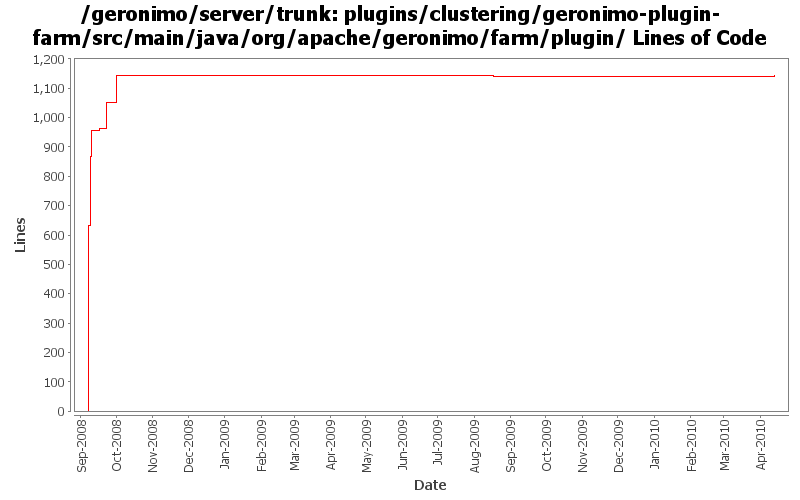

[root]/plugins/clustering/geronimo-plugin-farm/src/main/java/org/apache/geronimo/farm/plugin

| Author | Changes | Lines of Code | Lines per Change |
|---|---|---|---|
| Totals | 31 (100.0%) | 1226 (100.0%) | 39.5 |
| djencks | 27 (87.1%) | 1129 (92.1%) | 41.8 |
| dblevins | 1 (3.2%) | 92 (7.5%) | 92.0 |
| xuhaihong | 1 (3.2%) | 3 (0.2%) | 3.0 |
| jlaskowski | 2 (6.5%) | 2 (0.2%) | 1.0 |
GERONIMO-4909 The changes just remove the bundle if we unload the car from ConfigurationManager
3 lines of code changed in 1 file:
GERONIMO-4284 move TestGBean out of main jar
2 lines of code changed in 2 files:
GERONIMO-4284 make the plugin farm it depend on released artifacts
1 lines of code changed in 1 file:
header fixes (Rev, Date)
2 lines of code changed in 2 files:
Inroduced a MulticastLocation gbean that hold the mutlicast connection info so it can be configured in one place yet consumed by multiple gbeans.
Added a HeartbeatMonitor ghsell command (not quite working) that will allow people to see what is moving on the heartbeat.
Renamed FarmCommand to ClusterCommand and its flags to -c and --cluster
92 lines of code changed in 1 file:
GERONIMO=4284 Add remove plugin (from plugin list) and remove plugin list (from cluster) commands
94 lines of code changed in 4 files:
GERONIMO-4304 Register allowable plugin repositories, with credentials as appropriate
5 lines of code changed in 1 file:
GERONIMO-4284 fix the jpa stuff, recover better from multicast problems, add a gshell command, restructure slightly how non-jsr88 stuff is obtained in gshell
100 lines of code changed in 6 files:
GERONIMO-4284 add discovery based on code from activemq via openejb
294 lines of code changed in 7 files:
GERONIMO-4284 add unfortunately placed test code
3 lines of code changed in 1 file:
GERONIMO-4284 beginnings of plugin based farm management
630 lines of code changed in 5 files: